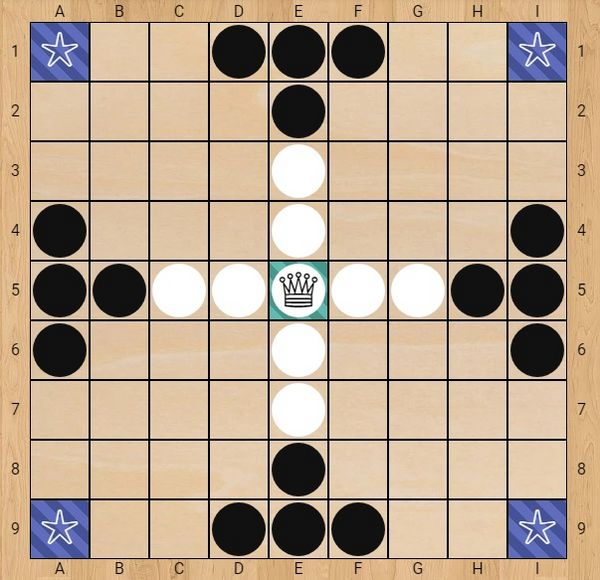
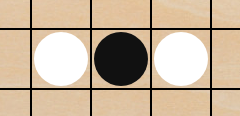
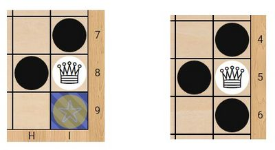
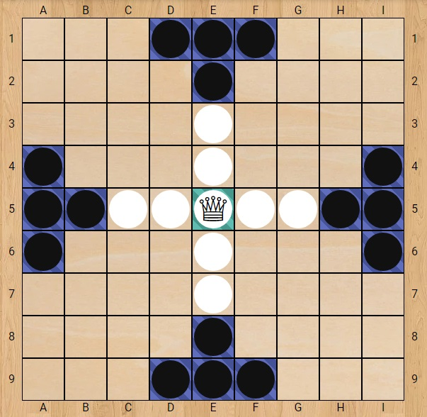

Tablut
Board Game Arena 官方规则文档
For tips on how to play Tablut, see Tips_Tablut .
Description
Tablut is an abstract tactical game for 2 players.
Original Rules: [[1]]
It is played on a 9 per 9 tiled board. There are 16 black pawns, called Muscovites, 8 white pawns, the Swedes, and a special white pawn, the Swedish king.
Players take turns, moving a single pawn of their color each time.
The initial setup looks like this:

Objective of the game
For the player with the black pawns, the Muscovites, the goal is to encircle the king in order to capture them.
For the player with the white pawns, the Swedes, the goal is to bring the king on any tile of the corner of the board.
Moves
All pawns move like the tower in chess: horizontally or vertically of any number of tiles.
Throne
The king starting positions is throne: Only the king may occupy the throne and the corner squares.
Other pieces may pass through the throne when it is unoccupied, but may not stop there.
Captures
A pawn is captured, and hence removed from the board, when surrounded by 2 enemy pawns on opposite neighbour tiles :

A corner can be used like an enemy to capture a pawn. However, a pawn willingly moving between 2 enemy pawns does not get captured.
The king is special in regard to capture: 2 Muscovites are not enough to eliminate him, he must be encircled on all his 4 neighbour tiles, or with 3 Muscovites and throne or Edge or with 2 Muscovites, one Edge and a corner.

The king may not participate in captures.
Variant: King exits on the rim
Like all tafl games, Tablut has many variants. Variant: King exits on the rim, or it can be called, king escapes from the borders.
The initial setup looks like this:

In this variant, the goal of the king is now to reach any square on the rim. All the Muscovites (black pawns) start on the fortress and the king starts on the throne.
In this variant, a corner can't be used like an enemy to capture a pawn.
The Muscovites can get out of the fortress squares but never get back in again. Any pawns outside the fortress squares cannot occupy or cross the fortress squares.
After the king leaves the throne, he can return to it or pass through it. No pawns other than the king can occupy the throne or pass through it.
(If the setting is king escapes from the corners, all pawns can pass through the throne, but if the setting is king escapes from the borders, only the king can pass through the throne. )